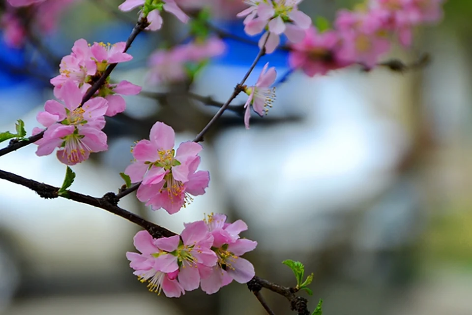

CHAPTER 01 / 1946
“臻进人类健康，
裨益国民生计。”
1946 年 10 月，国立兽医学院在兰州创建，盛彤笙先生任首任院长。在那个百废待兴的年代，这所学校把“人类健康”和“国民生计”写在一起，作为办学的初心。
这句话听起来很大，但落到当时，其实很具体：西北的畜牧业需要防疫，需要良种，需要有人懂得这片土地上的牛羊和牧草。于是，一群年轻人背着书包走进教室，也走进牧场。

“一所学校最初的样子，往往藏着一群人想为国家解决什么问题。”
1950 年，学校更名为西北兽医学院；1951 年，更名为西北畜牧兽医学院。名字在变，但面向西北、服务农牧的方向没有变。那些最早的教室和牧场，成了后来所有故事的起点。
CHAPTER 02 / 1958
从畜牧兽医，
到一片农业的森林。
1958 年，西北畜牧兽医学院与筹建中的甘肃农学院合并，成立甘肃农业大学。学校从单一的畜牧兽医学科，逐步发展为以农业学科为优势特色、多学科协调发展的教学研究型大学。
此后，学校经历“三易其址、四更其名”。每一次迁移、每一次更名，都是一次重新扎根。今天的甘农，有 24 个学院（教学部）、67 个本科专业，农业科学、植物与动物科学、环境与生态学、化学等学科进入 ESI 全球前 1%。

CHAPTER 03 / TODAY
校史没有结束，
它正在被我们续写。
2026 年，学校迎来建校 80 周年。八十年里，甘农培养了 25 万余名各类人才。他们中的很多人，名字不会出现在校史馆的墙上，但他们去过的地方、解决的问题、带动的产业，构成了校史的另一半。
今天的甘农，有 32 个科技小院、50 个专家院。师生把课堂搬到田间地头，把论文写在大地上。对我们这一届来说，校史不是“过去时”，而是“现在进行时”。

“我们不是校史的读者。
我们是校史的下一行。”
所以，我决定把校史从展板上“拿下来”，放进自己的专业学习里。去一次试验田，读懂一个品种；进一次科技小院，认识一位把论文写在大地上的老师；做一次乡村调研，听一听土地真正需要什么。
这大概就是我能想到的、最朴素的传承方式：不做旁观者，去做下一季的播种人。